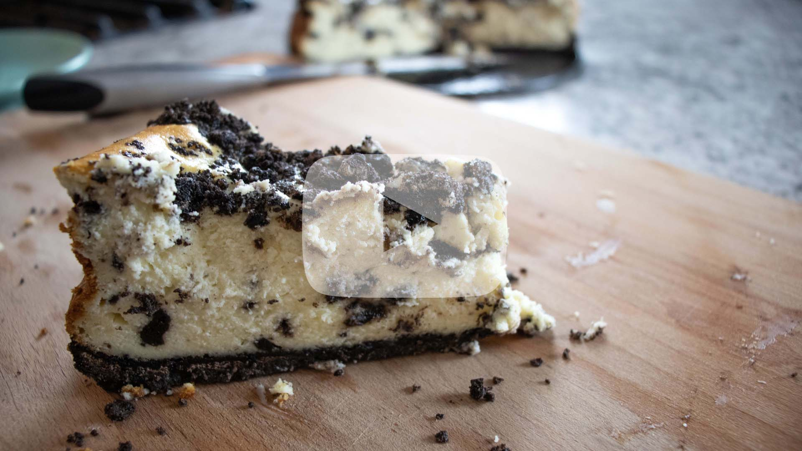

Oreo Cheesecake
Crust
- -20 Oreos, crumbled in a food processor
- - 2 tablespoons of butter - melted
Filling
- - 3 8oz packages of cream cheese
- - 1 cup of sugar
- - 5 large eggs
- - 1/4 teaspoon of salt
- - 2 teaspoons of vanilla
- - 1/4 cup of all-purpose flour
- - 8 oz of sour cream
- - 7 - 9 Oreos, coarsely chopped for batter
- - 5 - 7 Oreos, coarsely chopped for top of cheesecake
Directions:
Crust
- 1. In a bowl, mix together Oreo crumble and melted butter.
- 2. Pour crust mixture into bottom of cheesecake pan, using your hand, form the crust along the bottom of the pan.
- 3. Place crust in the refrigerator for at least 15 minutes.
Filling
- 1. Before starting filling, allow cream cheese to sit out for 60 - 90 minutes.
- 2. Preheat oven to 325 degrees F.
- 3. In a large bowl, add 3 packages of cream cheese. Using a mixer, mix cream cheese to fluff up cream cheese.
- 4. Add sugar gradually and continue mixing cream cheese until sugar is incorporated in.
- 5. Add eggs to mixture, mix thoroughly until eggs are incorporated in.
- 6. Add salt, vanilla, and flour to cream cheese mixture. Once again, incorporate ingredients into the mixture.
- 7. Add sour cream to cream cheese mixture, and once again, mix ingredients thoroughly.
- 8. Take your 7 - 9 Oreos that are crumbled up and pour them into the batter. With a spatula, not the beater, gently fold crumbles into mixture.
Cheesecake
- 1. Pour the mixture into your crust that has been resting in the refrigerator.
- 2. Sprinkle remaining Oreo crumbles over the top of the cheesecake.
- 3. Bake in the oven for 65 - 75 minutes.
- 4. Remove from oven and allow to rest in your refrigerator for 24 hours.
- 5. Serve and enjoy.